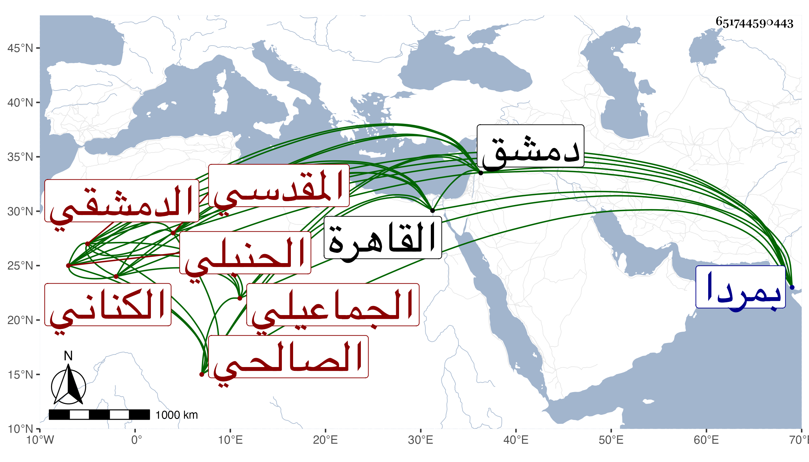

0902Sakhawi.DawLamic.ITO20230111-ara1.EIS1600.651744590443
Biography ID: 651744590443
753
موسى بن أحمد بن موسى بن عبد الله بن أيوب الشرف الكناني المقدسي الجماعيلي ثم الدمشقي الصالحي الحنبلي . ولد بعد الخمسين وثمانمائة بجماعيل ونشأ بمردا فقرأ بها القرآن ثم تحول منها مع أبيه إلى دمشق سنة ستين فحفظ المقنع وألفية النحو وجمع الجوامع وغيرها وعرض على جماعة وأخذ عن البرهان بن مفلح في الفقه وأصوله والزين عبد الرحمن الطرابلسي نقيب ابن الحبال والشهاب بن زيد وقرأ عليه الصحيحين وسيرة ابن هشام وغيرها ولازم العلاء المرداوي والتقي الجراعي وتنزل وتنزل في الزاوية لأبي عمر وتكسب بالتجارة وتميز ، وقدم القاهرة في ربيع الأول سنة ست وتسعين واجتمع بي في أواخر جمادى الثانية فقرأ علي في الصحيحين وسمع المسلسل وحديث زهير العشاري وحديثا من مسند أحمد ، وكتبت له إجازة وسمع معه التقي البسطي الحنبلي وتناولا ذلك .
